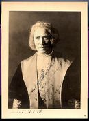

Plantilla:Efemérides - 4 de marzo
De:
La Frikipedia
, la enciclopedia
extremadamente
seria.

1493
-
Cristóbal Colón
, de vuelta de su primer viaje a
América
, es recibido por el
rey
de
Portugal
en
Lisboa
con unas
cervezas
bastante frías.
1801
- Thomas Jefferson jura su cargo en
Washington
como tercer presidente de
Estados Unidos
, su predecesor fue
Superman
y su sucesor será
Obama
.
1826
- El Congreso
argentino
acuerda que
Buenos Aires
sea la nueva capital de la República, retirando así la capital anterior llamada:
Maradona
.
Autor(es):
Gñapero Solitario
Frikipedia 2005-2016, Licencia
GFDL 1.2
- Extraído por FrikiLeaks
 De: La Frikipedia, la enciclopedia extremadamente seria. De: La Frikipedia, la enciclopedia extremadamente seria.
De: La Frikipedia, la enciclopedia extremadamente seria. De: La Frikipedia, la enciclopedia extremadamente seria.